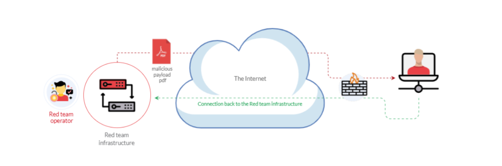

Weaponization
What is Weaponization
Weaponization is the second stage of the Cyber Kill Chain model. In this stage, the attacker generates and develops their own malicious code using deliverable payloads such as word documents, PDFs, etc. [1]. The weaponization stage aims to use the malicious weapon to exploit the target machine and gain initial access.
Most organizations have Windows OS running, which is going to be a likely target. An organization's environment policy often blocks downloading and executing .exe files to avoid security violations. Therefore, red teamers rely upon building custom payloads sent via various channels such as phishing campaigns, social engineering, browser or software exploitation, USB, or web methods.
The following graph is an example of weaponization, where a crafted custom PDF or Microsoft Office document is used to deliver a malicious payload. The custom payload is configured to connect back to the command and control environment of the red team infrastructure.

For more information about red team toolkits, please visit the following: a GitHub repository that has it all, including initial access, payload development, delivery methods, and others.
Link: https://github.com/infosecn1nja/Red-Teaming-Toolkit
Most organizations block or monitor the execution of .exe files within their controlled environment. For that reason, red teamers rely on executing payloads using other techniques, such as built-in windows scripting technologies. Therefore, this task focuses on various popular and effective scripting techniques, including:
• The Windows Script Host (WSH)
• An HTML Application (HTA)
• Visual Basic Applications (VBA)
• PowerShell (PSH)